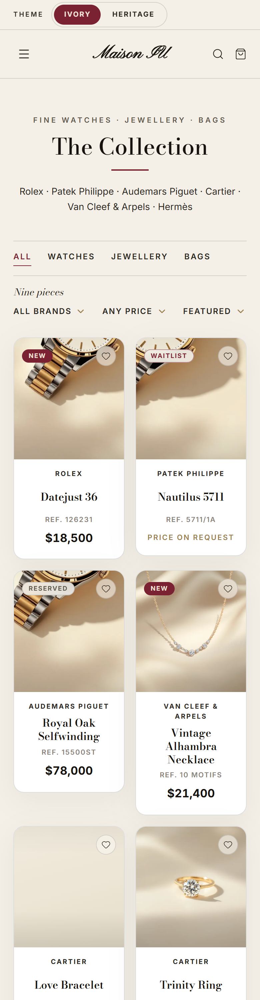
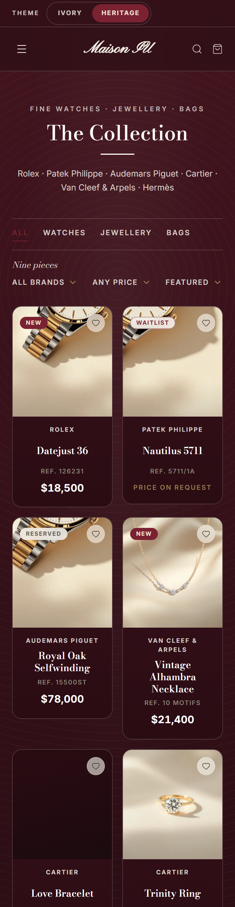
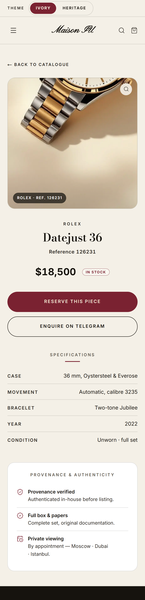
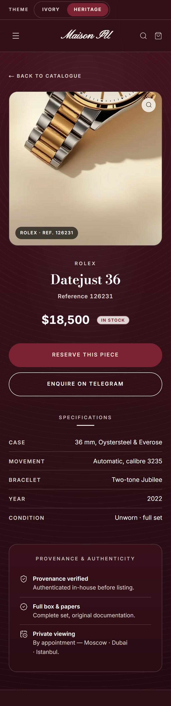

Каталог
Цены Inter · фильтры восстановлены · шапка в цвет темы

КаталогТема Ivory

КаталогТема Heritage
Карточка товара
Отцентрована · кнопки в столбик · спеки и провенанс

Карточка товараТема Ivory

Карточка товараТема Heritage
Фото часов — на ваше решение
Сейчас | Предлагаю · обе темы

Что не так сейчас
На карточках Rolex Datejust, Patek Nautilus и Audemars Piguet Royal Oak стоит один и тот же кроп одних часов (двухцветный браслет), а у Nautilus кроп почти пустой. Для магазина часов это сразу видно — модели-то разные и очень узнаваемые.
Предлагаю до ваших фото
Фирменная «витрина» вместо чужого фото: скрипт Maison IU, у каждой карточки свой бренд и референс, подпись «Photography in preparation». Честно, на бренде, и три карточки становятся разными. Меняется мгновенно, как только пришлёте реальные фото вашего товара — это и есть главный рычаг качества.
Ничего из этого пока не применено к живому каталогу. Скажете «да» — поставлю за пару минут; пришлёте фото — заменю на настоящие.
На карточках Rolex Datejust, Patek Nautilus и Audemars Piguet Royal Oak стоит один и тот же кроп одних часов (двухцветный браслет), а у Nautilus кроп почти пустой. Для магазина часов это сразу видно — модели-то разные и очень узнаваемые.
Предлагаю до ваших фото
Фирменная «витрина» вместо чужого фото: скрипт Maison IU, у каждой карточки свой бренд и референс, подпись «Photography in preparation». Честно, на бренде, и три карточки становятся разными. Меняется мгновенно, как только пришлёте реальные фото вашего товара — это и есть главный рычаг качества.
Ничего из этого пока не применено к живому каталогу. Скажете «да» — поставлю за пару минут; пришлёте фото — заменю на настоящие.